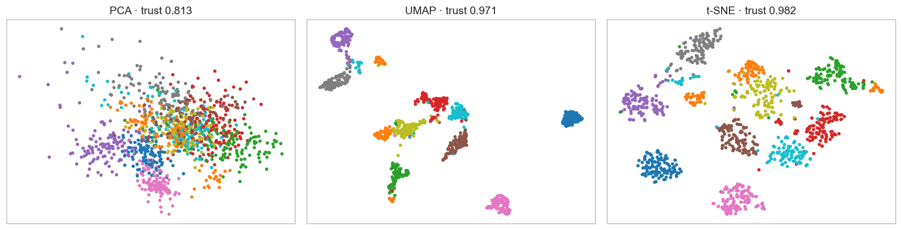

ML Hands-on Lab · 07 — Latent factor and decomposition
UMAP and t-SNE versus PCA
A two-dimensional embedding is a map designed to preserve selected relationships. UMAP and t-SNE emphasize local neighbors; attractive gaps between plotted islands are not measurements of distance in the original data.
Read this page independently, then run the notebook cells in order. The figure below is a preserved historical notebook output; no model training was rerun for this editorial revision.
1. The experiment and its boundary
The notebook selects a stratified 1,200-image subset of handwritten digits. Each image has 64 pixel features. It standardizes that entire subset, then embeds the same rows with two-component PCA, UMAP and t-SNE. Digit labels color the plots; neither UMAP nor t-SNE receives them during fitting.
This is a transductive visualization experiment. The sampled rows are the analysis population, not a training split followed by a predictive test. Local trustworthiness uses distances in the standardized 64-dimensional inputs; it does not need the digit labels.
2. The mechanism
PCA finds orthogonal linear directions that preserve as much variance as possible. UMAP constructs a weighted nearest-neighbor graph, then seeks a low-dimensional layout that preserves important edges. t-SNE converts high-dimensional similarities into neighbor probabilities and fits a two-dimensional probability distribution with heavy-tailed distances.
PCA: preserve high-variance linear directions
UMAP: preserve a weighted neighborhood graph
t-SNE: minimize mismatch between neighbor probabilities
These objectives are different. A nonlinear layout can recover local neighborhoods that overlap in a two-component linear projection, while distorting scale, density and the relative placement of remote groups. Axes in UMAP and t-SNE have no inherent meaning such as “digit complexity.”
3. Work through a tiny example
Suppose A, B and C are one another’s closest neighbors, while D and E are a separate close pair. One map puts the ABC island 5 units from DE; another puts it 50 units away. Both can preserve exactly the same local neighbor lists.
Now move E next to A in the plot even though it is distant in the input space. That creates an intrusive false neighbor. Trustworthiness penalizes such intrusions, with a larger penalty when the point had a worse original-space rank. A high score does not certify all pairwise distances, densities or missing-neighbor recall.
4. Settings that change this experiment
| Notebook setting | What it changes |
|---|---|
| UMAP n_neighbors=20 | Smaller neighborhoods emphasize very local detail; larger ones ask the graph to retain broader structure. |
| UMAP min_dist=.15 | Controls how tightly points can pack in the layout. A compact island is partly a setting choice, not evidence of a naturally dense population. |
| t-SNE perplexity=30; max_iter=500; init="pca" | Perplexity sets a local similarity scale. Initialization and optimization affect placement, so compare more than one plausible layout. |
5. The actual notebook operation
These are the actual core operations from the matching notebook, reformatted for readability. They use the data, imports and variables defined in earlier cells; open the notebook to execute the complete experiment.
Notebook cell 10 · counting all cells from 1
Xs = StandardScaler().fit_transform(X)
print('Scaled:', Xs.shape, 'finite:', np.isfinite(Xs).all())
pca = PCA(n_components=2, random_state=SEED).fit_transform(Xs)Notebook cell 12 · counting all cells from 1
um = umap.UMAP(n_neighbors=20, min_dist=0.15, n_components=2, random_state=SEED, n_jobs=1).fit_transform(Xs)
ts = TSNE(n_components=2, perplexity=30, init='pca', learning_rate='auto', max_iter=500, random_state=SEED).fit_transform(Xs)
emb = {'PCA': pca, 'UMAP': um, 't-SNE': ts}
print('Embedding shapes:', {k: v.shape for (k, v) in emb.items()})6. Baseline and what the metrics mean
The notebook reports trustworthiness at 10 neighbors for each map and for a seeded random two-dimensional layout. PCA is a useful interpretable linear baseline; the random layout supplies a deliberately non-informative local-neighborhood comparison. Trustworthiness lies between 0 and 1, but random layouts do not have a universal baseline of zero.
All maps use the same scaled inputs and the same metric setting. This supports a local-preservation comparison, not an accuracy ranking for a future classifier. If an embedding becomes a prediction feature, it needs a separate fit/transform and validation design.
7. Read the historical figure

- Left: the historical PCA map mixes several digit colors and reports trustworthiness .813. Two linear directions lose some local information in this experiment.
- Middle/right: historical UMAP and t-SNE report .971 and .982 and form clearer local islands. These numbers describe the chosen 10-neighbor metric on these rows, not a universal winner.
- The large blue island moves from the right of the UMAP plot to the lower left of t-SNE. Orientation and inter-island spacing are layout choices, not a new semantic fact about blue digits.
8. Break the assumption
A second t-SNE run changes both initialization—from PCA to random—and random seed—from 0 to 17. The notebook compares local trustworthiness and the correlation of distances between the ten class centroids. Similar local scores can coexist with different between-class geometry.
This is not an isolated seed-only experiment because initialization also changes. Rotation or translation alone cannot change pairwise distances; changes in centroid-distance correlation indicate something beyond a rigid relabeling of axes. No printed correlation by itself establishes a semantic relationship between digit classes.
9. Exercises with a decision to explain
- Run a small perplexity sweep and retain all plots beside their trustworthiness scores. Describe the stable neighborhoods and the unstable gaps separately.
- Change only UMAP n_neighbors, keeping preprocessing and seed fixed. Check whether broader connectivity costs local detail.
- Hide the color labels. List only claims supported by coordinates and neighborhoods, then inspect original images before naming a group.
10. Run and inspect
Change one assumption at a time, keep the appropriate evaluation boundary, and compare the actual results. A baseline win or an inconclusive result is useful evidence.